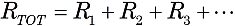
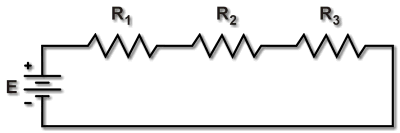
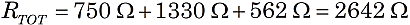

The effect of resistors wired in series is that the voltage drop from each resistor adds up. Thus, all the resistors act like one big resistor, whose value equals the sum of the individual resistors. So, the formula for the total resistance of series resistances R1, R2, R3,… is:


Figure 1.Three resistors in series.
For example, suppose the circuit in Figure 1 above has R1 = 750 Ω, R2 = 1.33 kΩ, and R3 = 562 Ω. Then the total series resistance for this circuit is

or RTOT = 2.642 kΩ.
Note: It is important to convert to consistent units, if necessary. Above, we converted 1.33 kΩ to 1330 Ω so that we consistently added ohms, not a mixture of ohms and kilohms.